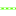

<!doctype html>
<html lang="en">
    <head>
        <meta charset="utf-8">
        <meta http-equiv="X-UA-Compatible" content="IE=edge">
        <meta name="viewport" content="initial-scale=1,user-scalable=no,maximum-scale=1,width=device-width">
        <meta name="mobile-web-app-capable" content="yes">
        <meta name="apple-mobile-web-app-capable" content="yes">
        <link rel="stylesheet" href="css/leaflet.css" />
        <link rel="stylesheet" type="text/css" href="css/qgis2web.css">
        <link rel="stylesheet" href="css/label.css" />
        <link rel="stylesheet" href="css/MarkerCluster.css" />
        <link rel="stylesheet" href="css/MarkerCluster.Default.css" />
        <link rel="stylesheet" href="css/leaflet.draw.css" />
        <link rel="stylesheet" href="css/leaflet.measurecontrol.css" />
        <script src="js/leaflet.js"></script>
        <script src="js/OSMBuildings-Leaflet.js"></script>
        <script src="js/leaflet-hash.js"></script>
        <script src="js/label.js"></script>
        <script src="js/Autolinker.min.js"></script>
        <script src="js/leaflet.draw.js"></script>
        <script src="js/leaflet.measurecontrol.js"></script>
        <script src="js/leaflet.markercluster.js"></script>
        <style>
        #map {
            width: 800px;
            height: 530px;
        }
        </style>
        <title>High Resolution Ortho Mosaic, Topographic Contours, and Planimetric Features for "Rails to Trails" Project</title>
    </head>
    <body>
        <div id="map">
        </div>
        <script src="data/json_Features1.js"></script>
        <script src="data/json_Building2.js"></script>
        <script src="data/json_Tree3.js"></script>
        <script src="data/json_Contours4.js"></script>
        <script>
        L.ImageOverlay.include({
            getBounds: function () {
                return this._bounds;
            }
        });
        var map = L.map('map', {
            measureControl:true,
            zoomControl:true, maxZoom:27, minZoom:1
        }).fitBounds([[37.4768205371,-122.172377987],[37.480020366,-122.168743393]]);
        var hash = new L.Hash(map);
        map.attributionControl.addAttribution('<a href="https://github.com/tomchadwin/qgis2web" target="_blank">qgis2web</a>');
        var feature_group = new L.featureGroup([]);
        var bounds_group = new L.featureGroup([]);
        var raster_group = new L.LayerGroup([]);
        var basemap0 = L.tileLayer('http://otile1.mqcdn.com/tiles/1.0.0/sat/{z}/{x}/{y}.jpg', {
            attribution: 'Tiles Courtesy of <a href="http://www.mapquest.com/">MapQuest</a>,and Vectors and High Resolution Imagery Courtesy of <a href="http://www.geowingmapping.com/">GeoWing Mapping Inc.</a>',
            maxZoom: 28
        });
        basemap0.addTo(map);
        var initialOrder = new Array();
        var layerOrder = new Array();
        
        function stackLayers() {
            for (index = 0; index < initialOrder.length; index++) {
                map.removeLayer(initialOrder[index]);
                map.addLayer(initialOrder[index]);
            }
        }
        function restackLayers() {
            for (index = 0; index < layerOrder.length; index++) {
                layerOrder[index].bringToFront();
            }
        }

        layerControl = L.control.layers({},{},{collapsed:false});
        var img_Imagery0 = 'data/json_OrthoImagery0.png';
        var img_bounds_Imagery0 = [[37.4774684695,-122.174042502],[37.4794135363,-122.168675803]];
        var overlay_Imagery0 = new L.imageOverlay(img_Imagery0, img_bounds_Imagery0);
        bounds_group.addLayer(overlay_Imagery0);
        layerOrder[layerOrder.length] = overlay_Imagery0;
        raster_group.addLayer(overlay_Imagery0);
        function pop_Features1(feature, layer) {
        }

        function doStyleFeatures1(feature) {
			switch (feature.properties.Name) {
                default:
                    return {
                    color: '#ffffff',
                    weight: '1.2',
                    dashArray: '',
                    lineCap: 'square',
                    lineJoin: 'bevel',
                    opacity: '0.92',
                };
                break;

                case 'Curb_Impervious':
                    return {
                    color: '#92a0ab',
                    weight: '1.0',
                    dashArray: '',
                    lineCap: 'round',
                    lineJoin: 'round',
                    opacity: '0.92',
                };
                break;

                case 'Curb_Road':
                    return {
                    color: '#44aa1c',
                    weight: '1.0',
                    dashArray: '',
                    lineCap: 'round',
                    lineJoin: 'round',
                    opacity: '0.92',
                };
                break;

                case 'Fence':
                    return {
                    color: '#ffff37',
                    weight: '1.8',
                    dashArray: '',
                    lineCap: 'round',
                    lineJoin: 'round',
                    opacity: '0.64219588',
                };
                break;

                case 'Gutter':
                    return {
                    color: '#f8c406',
                    weight: '1.0',
                    dashArray: '',
                    lineCap: 'round',
                    lineJoin: 'round',
                    opacity: '0.92',
                };
                break;

                case 'Impervious_concrete':
                    return {
                    color: '#79b7c2',
                    weight: '1.24',
                    dashArray: '',
                    lineCap: 'square',
                    lineJoin: 'bevel',
                    opacity: '0.92',
                };
                break;

                case 'Imperviuos_asphalt':
                    return {
                    color: '#6359a4',
                    weight: '1.04',
                    dashArray: '',
                    lineCap: 'square',
                    lineJoin: 'bevel',
                    opacity: '0.92',
                };
                break;

                case 'Rail':
                    return {
                    color: '#5eff07',
                    weight: '1.64',
                    dashArray: '',
                    lineCap: 'round',
                    lineJoin: 'round',
                    opacity: '0.92',
                };
                break;

                case 'Retaining_Wall':
                    return {
                    color: '#ffbe46',
                    weight: '1.0',
                    dashArray: '',
                    lineCap: 'square',
                    lineJoin: 'bevel',
                    opacity: '0.92',
                };
                break;

                case 'Road_barrier':
                    return {
                    color: '#2615db',
                    weight: '1.4',
                    dashArray: '',
                    lineCap: 'round',
                    lineJoin: 'round',
                    opacity: '0.92',
                };
                break;

                case 'Road_paved':
                    return {
                    color: '#c815b0',
                    weight: '1.24',
                    dashArray: '',
                    lineCap: 'round',
                    lineJoin: 'round',
                    opacity: '0.20564668',
                };
                break;

                case 'Trail':
                    return {
                    color: '#db389a',
                    weight: '1.4',
                    dashArray: '',
                    lineCap: 'round',
                    lineJoin: 'round',
                    opacity: '0.92',
                };
                break;

            }
        }
        var json_Features1JSON = new L.geoJson(json_Features1, {
            onEachFeature: pop_Features1,
            style: doStyleFeatures1
        });
        layerOrder[layerOrder.length] = json_Features1JSON;
        bounds_group.addLayer(json_Features1JSON);
        initialOrder[initialOrder.length] = json_Features1JSON;
        feature_group.addLayer(json_Features1JSON);
        function pop_Building2(feature, layer) {
        }

        function doStyleBuilding2(feature) {
            return {
                weight: 1.04,
                color: '#728584',
                fillColor: '#c4e7dd',
                dashArray: '',
                lineCap: 'square',
                lineJoin: 'bevel',
                opacity: 0.439216,
                fillOpacity: 0.439216
            };
        }
        var json_Building2JSON = new L.geoJson(json_Building2, {
            onEachFeature: pop_Building2,
            style: doStyleBuilding2
        });
        layerOrder[layerOrder.length] = json_Building2JSON;
        bounds_group.addLayer(json_Building2JSON);
        initialOrder[initialOrder.length] = json_Building2JSON;
        feature_group.addLayer(json_Building2JSON);
        function pop_Tree3(feature, layer) {
        }

        function doStyleTree3(feature) {
            return {
                weight: 1.04,
                color: '#809848',
                fillColor: '#badd69',
                dashArray: '',
                lineCap: 'square',
                lineJoin: 'bevel',
                opacity: 0.439216,
                fillOpacity: 0.439216
            };
        }
        var json_Tree3JSON = new L.geoJson(json_Tree3, {
            onEachFeature: pop_Tree3,
            style: doStyleTree3
        });
        layerOrder[layerOrder.length] = json_Tree3JSON;
        bounds_group.addLayer(json_Tree3JSON);
        initialOrder[initialOrder.length] = json_Tree3JSON;
        feature_group.addLayer(json_Tree3JSON);
        function pop_Contours4(feature, layer) {
        }

        function doStyleContours4(feature) {
			switch (feature.properties.LType) {
                case 1:
                    return {
                    color: '#cf1f77',
                    weight: '2.0',
                    dashArray: '',
                    lineCap: 'square',
                    lineJoin: 'bevel',
                    opacity: '1.0',
                };
                break;

                case 2:
                    return {
                    color: '#d7d7d7',
                    weight: '1.0',
                    dashArray: '',
                    lineCap: 'square',
                    lineJoin: 'bevel',
                    opacity: '1.0',
                };
                break;

            }
        }
        var json_Contours4JSON = new L.geoJson(json_Contours4, {
            onEachFeature: pop_Contours4,
            style: doStyleContours4
        });
        layerOrder[layerOrder.length] = json_Contours4JSON;
        bounds_group.addLayer(json_Contours4JSON);
        initialOrder[initialOrder.length] = json_Contours4JSON;
        feature_group.addLayer(json_Contours4JSON);
        raster_group.addTo(map);
        feature_group.addTo(map);
      	var baseMaps   = {};
        L.control.layers({'<b>Contours</b><br />&nbsp;&nbsp;&nbsp;&nbsp;&nbsp; Index (10 ft)<br />&nbsp;&nbsp;&nbsp;&nbsp;&nbsp; Intermediate (2 ft)<br /<br /></br></br>&nbsp;&nbsp;&nbsp;<a href="http://www.geowingmapping.com"><font color=purple>geowingmapping.com</a></font>': json_Contours4JSON,'<b>Features</b><br />&nbsp;&nbsp;&nbsp;&nbsp;&nbsp; Buildings<br />&nbsp;&nbsp;&nbsp;&nbsp;&nbsp; Curbs (Parking Lots)<br />&nbsp;&nbsp;&nbsp;&nbsp;&nbsp; Curbs (Roads)<br />&nbsp;&nbsp;&nbsp;&nbsp;&nbsp; Fence<br />&nbsp;&nbsp;&nbsp;&nbsp;&nbsp; Gutter<br />&nbsp;&nbsp;&nbsp;&nbsp;&nbsp; Rail<br />&nbsp;&nbsp;&nbsp;&nbsp;&nbsp; Wall<br />&nbsp;&nbsp;&nbsp;&nbsp;&nbsp; Road Barrier<br />&nbsp;&nbsp;&nbsp;&nbsp;&nbsp; Road<br />&nbsp;&nbsp;&nbsp;&nbsp;&nbsp; Surface (Aspahlt)<br />&nbsp;&nbsp;&nbsp;&nbsp;&nbsp; Surface (Concrete)<br />&nbsp;&nbsp;&nbsp;&nbsp;&nbsp; Trees<br />&nbsp;&nbsp;&nbsp;&nbsp;&nbsp; Trail<br />': json_Features1JSON},baseMaps,{collapsed:false}).addTo(map);
        L.control.scale({options: {position: 'bottomleft', maxWidth: 100, metric: true, imperial: false, updateWhenIdle: false}}).addTo(map);
        stackLayers();
        //map.on('overlayadd', restackLayers);
        </script>
    </body>
</html>
